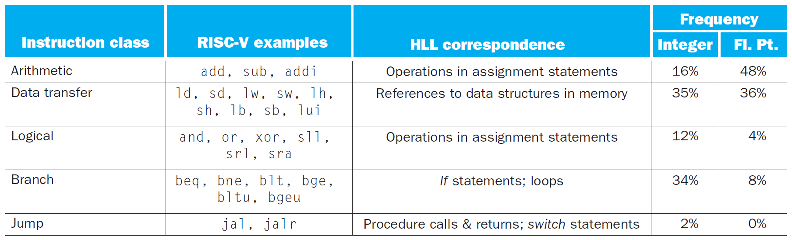
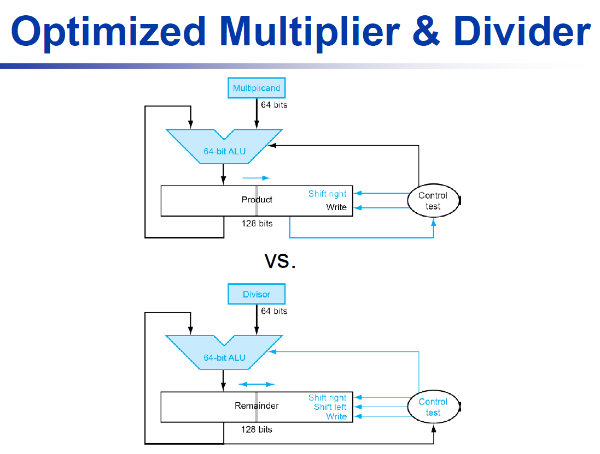
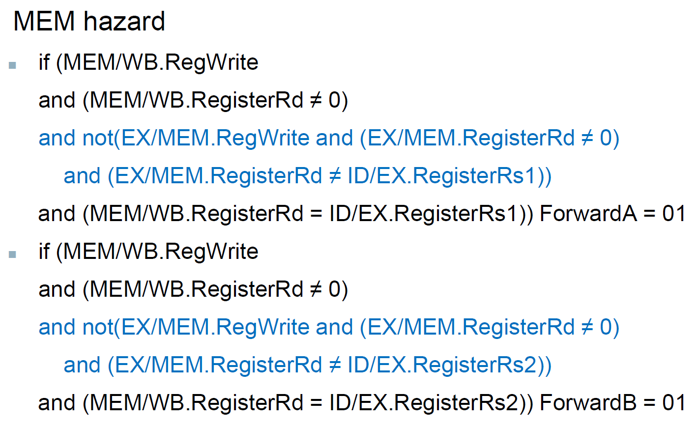
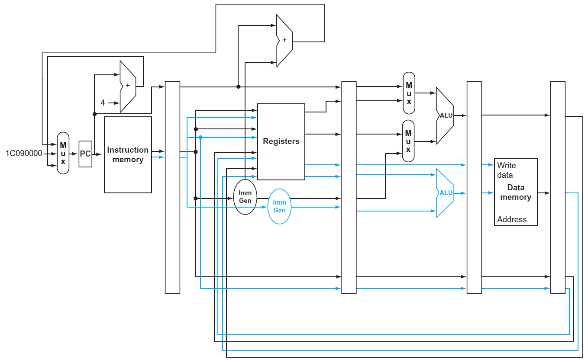

Computer Architecture¶
resources¶
https://chi_gitbook.gitbooks.io/personal-note/content/instruction_set_architecture.html
Ch1 Computer Abstractions & Technology¶
- chip
- pricing
- wafer
- die
- wafer
- /
- cost
- wafer cost & area
- fixed
- defect rate
- determined by manufacturing process
- die rate
- determined by disign
- throughput = total work done per unit time
- performance = execution time
execution time¶
- CPU time
- CPU time = clock cycles x cycle time = cycles / clock rate
- trade-off: clock rate vs. cycle count
- clock cycles = instruction count (IC) x cycles per instruction (CPI)
- CPU time = IC x CPI x cycle time = IC x CPI / clock rate

- CPI
- \(T_c\), clock period = seconds/cycle-
- ISA, instruction set architecture
- improvement
- improvement factor \(n\)
- \(T_{improved}=\dfrac{T_{affected}}{n}+T_{unaffected}\)
- power
- \(power\propto CV^2\propto f\)
- MIPS: millions of instruction per second
- doesn't account for
- different ISAs between computers
- different complexity between instructions
- doesn't account for
Ch2 Instructions¶
- instruction set
- e.g. x86, ARM, RISC-V
RISC-V Intro¶
- instruction set
- regularity simpler implementation
- simplicity higher performance, lower cost
- 32x64-bit register file
- 32-bit data: word
- 64-bit data: doubleword
- Instructions are word-aligned
- address 4 bytes
- little endian
- least-significant byte @ least address
- bytes 4 or 8 or whatever
- instruction 8 bytes
- 8x8=64
- 12x8=96
- load A[8] to x9
- add x9 & h, store to x9
- x21 register access
- store x9 to A[12]
b/h/w/d¶
- byte = 8 bits
- halfword = 16 bits
- word = 32 bits
- doubleword = 64 bits
2s complement¶
- 1s complement: negation
- e.g. 0110 1001
- 2s complement: 1s complement +1
- e.g. 6 = 0110 -6 = 1001+1 = 1010
- 8-D 8+2s(D) = 8+2s(1101) = 8+0011 = 8+3 = 11 = B

signed & unsigned¶
- signed
- 1
- complement (1s 2s etc.)
- unsigned
sign extension¶
bits
offset¶
array¶
-
e.g.
- x30 = x10 array D
- addi x30, x30, 32 32 bytes i.e. 4 doublewords array index +4
- x30 = 80(x30) D[2]4(x30) D[3]
- offset 8 (for doubleword) array index
- word = 4 bytes
- word = 4 bytes
- see #array vs pointer
- offset 8 (for doubleword) array index
- D[0:3] x7 >= x5 = 4
encoding¶
overall¶
- I SB UJ 10:5
- 32 bits
- major opcode in bits 0-6
- destination register in bits 7-11
- first source register in bits 15-19
- second source register in bits 20-24
- https://stackoverflow.com/a/39450410/15493213
binary representation¶
- 15 0xF
- 32-bit format4 bits 8 16 0x
R-format¶
- Register-format
add rd, rs1, rs2- funct7 & funct3 & opcode operation
I-format¶
- Immediate-format
operation rd, imm(rs1)- opcode & func3 instruction (arithmetic OR load)
- immediate: constant OR offset for base address
jalrjalr rd imm(rs1)will jump to the address2imm+rs1&& save the address of next line (i.e. current address + 4) tord- e.g. let x10 = 0x14, and
jalr x10 0(x10)in address0x24, running this line will jump to address0x14&& set x10 to 0x24+4 =0x28 - use
x0asrdif don't care about return address
- e.g. let x10 = 0x14, and
- https://electronics.stackexchange.com/a/553160
SLLI= left logical shift- shift left 0
SLLI x10, x10, 2x10 shift left by 2 bits
SRLI= right logical shift- shift right 0
SRAI= right arithmetic shift- right shift sign bit
- for signed number
- e.g. -8 = 11111000, -8/2 = -4 = 11111100, the right arithmetic shift of the former
- left arithmetic shift left logical shift, so no SRLI
ANDI= bit-by-bit AND operationANDI x20, x10, 3x20 = the result of x10 AND 3 i.e. i.e. x10%4
S-format¶
- store byte/halfword/word/doubleword
- immediate: offset for base address (rs1)
sb rs1 rs2
SB-format¶
- conditional jump
- if xxxx jump to branch xxxx
- branch addressing
bltbgeetc.- immediate 0th bit
- immediate
- take the branch go to PC + immediate x 2 (i.e. immediate 0)
- bc imm omit 0 i.e. shift right
- skip go to PC + 4 i.e. next line
- 1 instruction 4 bytes
beq rs1, rs2, immjump to PC+immx2 if rs1=rs2
UJ-format (jal)¶
- unconditional jump
- only for
jal, unconditional jump-and-link - 20-bit immediate
- (2s complement)
- 1 instruction 4 bytes
- x immediate = 4x/2 (4x 0)
- jump to address = PC+imm i.e. + imm/4
- e.g.
- 9 instruction 4 bits imm = -36 = 2s complement of 36 shift right i.e. 2 i.e. 0th bit
- jal opcode = 1101111
U-format¶
lui rd constantimm[31:12]= constant represented with 20 bits 20 bits rd[31:12]
RV32I Instruction Sets ()¶
p.119
https://book.rvemu.app/instruction-set/01-rv64i.html
I-format LX load byte/halfword/word/doubleword funct3
e.g.
RISC-V operations¶

slli a, b, 1 a = b<<1 (=2b)
addi a, b, 1 a=b+1
if¶
beq a, b, callback if(a\==b){callback()}
bne a, b, callback if(a!=b){callback()}
blt a, b, callback if(a<b)
bge a, b, callback if(a>=b)
while¶
jump¶
- leaf procedure
- non-leaf procedure
- recursive?
load/store¶
lui
lui x19, 976 12 0 976
example¶
dynamic linking¶
only link/load library procedure when called
- Java just in time compiler
performance judging¶
- IC (why?) & CPI alone performance indicators
- compiler optimizations are sensitive to algorithms
- Java just-in-time >> Java Virtual Machine
- C
array vs. pointer¶
- pointer indexing
- e.g.
- x7 = size-1
- array loop
slli&addslli: i indexadd
MIPS¶
- successor of RISC-V
Ch3 Arithmetic¶
- for multipedia
- overflow
multiplication¶
basic multiplier¶
- cycle cycle
- sol: #faster multiplier
- length of product = sum of multiplicand & multiplier length, ignoring the sign bit
- pointer
- pointer
- 1
- e.g.
- optimized
- multiplicand & ALU reduced to 64 bits
- unused portion of registers & adders
- multiplier placed in the right half of product
- e.g.
- ...
- multiplicand & ALU reduced to 64 bits
signed multiplication¶
faster multiplier¶
- more cost, higher performance
- cost performance tradeoff
- pipeline in parallel even faster
instructions¶
- mul
- multiply
- return lower 64 bits
- mulh
- multiply high
- return upper 64 bits
- can check 64-bit overflow
- mulhu
- multiply high unsigned
- assume unsigned, return upper 64 bits
- mulhsu
- multiply high signed/unsigned
- assume 1 signed other unsigned, return upper 64 bits
division¶
- long division
- retoring division
- 0
- signed division
- abs()
- division dependent on parallel time complexity
divisor¶
- divisor pointer quotient pointer
- e.g.
- 4-bit ver. of 7/2
- 4-bit ver. of 7/2
- cycle cycle
- optimized divider
- simultaneously, subtract & shift the operands & shift the quotient
- quotient remainder right half
- bc remainder shift left quotient
- divisor register & ALU halved
- like optimized multiplier
- 
- e.g.
- 4-bit shift 4 remainder left half shift right (at 5th operation)
- remainder = remainder left halfquotient = remainder right half
signed division¶
- e.g.
- 7/2 = 3 ... 1
- -7/2 = -3 ... -1 NOT 4 ... 1
- e.g.
faster division¶
- parallel remainder
- if negative remainder divisor
- SRT division
- predict multiple quotient bits in one step, then correct errors later
- nonrestoring division
- don't add the divisor back immediately if the remainder's negative
- 1 clock cycle per step
- nonperforming division
instructions¶
- div, rem
- divu, remu
- no overflow for 0 & overflow
- return
instruction set with multiplication & division¶
float¶
- integer
- \(\pm 1.xxxxx_2\times 2^{yyyyyyyy}\)
- 2 representations
- single precision (32-bit)
- double precision (64-bit)
doublein C
format¶
- IEEE Std 754
- placed this way for sorting purpose
- sign exponent fraction
- exponent
- Bias
- exponent unsigned
- \(2^{-100}\) \(2^{-100+Bias}\)
- 127 for single; 1023 for double
- simplicity for sorting
- negative 2s complement
- 000..00 & 111..11 are reserved
- single
- min real exponent = 1-127 = -126
- max real exponent = 254 - 127 = 127
- double
- min real exponent = 1-1023 = -1022
- max real exponent = 2046 - 1023 = 1023
- fraction 0 & 1
- single
- overflow:
- underflow:
- Bias
- fraction = 0-1
- single-precision
- min 00000001
- max 11111110
- double-precision
- min 00000000001
- max 11111111110
- e.g.
- 1.6875 to hexadicimal representation
- single encode to double
- 1.6875 to hexadicimal representation

number representation¶
- denormalized number
- exponent = 0
- so \(fraction\times 2^{-Bias}\)
- < normal numbers
- exponent = 0
- infinity
- exponent = all 1s
- fraction = 0
- not a number (NaN)
- exponent = all 1s
- fraction != 0
addition¶
multiplication¶
FP multiplier is FP adder but use multiplier for significands
instructions¶
examples¶
escaping from barbaric yanks¶
flw f0, const5(x3) //f0 = 5
flw f1, const(x9) //f1 = 9
fdiv.s f0, f0, f1 //f0 = f0/f1 = 5/9
flw f1, const32(x3) //f1 = 32
fsub.s f10, f10, f1 //f10 = f10 - f1 = f10 - 32
fmul.s f10, f0, f10 //f10 = f0 x f10 = 5/9 x f10
jalr x0, 0(x1) //return
array multiplication¶
- \(a_{2,3}\) in 5x5 1x5+3 = 8th item ()
- 64-bit x8
slli 3
rounding¶
- extra bits of precision
- guard & round
- guard 1st round 2nd then round with
- e.g. (round to ) 1.5252 1.53 bc \(52\in [51,99]\)
- without these 2
- guard 1st round 2nd then round with
- sticky
- guard & round bit 0 set to 1append as 3rd bit
- 0.500000...000001 0.501
- guard & round
- nearest even
- tie () round to even
- tie round last bit 0
- nearest even
- e.g.
Ch4 Processor¶
CPU¶
- implementation of the RISC-V subset
- with multiplexers & control lines
logic design¶
- 1 wire 1 bit
- multiple wire bus
- multiplexer (mux)
- input output
building a datapath¶
fetching instruction¶
- Add ALU PC +4
- instruction memory combinational logic
R-type instructions¶
- arithmetic-logical instructions
- don't use sign extender (P4.3.3)
- read 2 registers perform an ALU operation (arithmetic or logical operation) write result to register
load/store¶
- only load & store use data memory (P4.3.1)
- immediate generation: convert ALU
- 32-bit instruction as input
- selects a 12-bit field for load, store, and branch if equal that is sign-extended into a 64-bit result appearing on the output (?)
branch instructions (beq)¶
- shift left 0 sign-extended offset field sign bit
- x2
- branch target = PC + imm slli 1
- ALU rs1-rs2 0 PC = branch targetotherwise PC = PC+4
¶
- mux & instruction class
single-cycle implementation¶
ALU¶
main control unit¶
- truth table
- don't care
- rs1 = read register 1
- rs2 = read register 2
- rd = write register
- control signals
operation of datapath¶
- control unitinput 7-bit opcodeoutput
- e.g.
- add
- read address && pc+=4
- instruction decode
- read register
- instruction execution
- ALU
- write data back (to destination register)
- R-type data memory
- load
- ALU sum of register 1 & offset address of data memory
- data from the memory unity write into register file
- beq
- imm gen offset
- offset slli 1
- imm slli 1 + pc branch target
- ALU rs1-rs2
- = 0 PC = branch target
- != 0 PC = PC+4
- imm gen offset
- add
finalizing control¶
performance issues¶
- clock period determined by worst-case delay (longest path)
- load instruction
- instruction memory register file ALU data memory register file5 stage
- but load instruction
- instruction memory register file ALU data memory register file5 stage
- solution: pipelining
- load instruction
pipelining¶
RISC-V 5-stage pipeline¶
- IF = instruction fetch
- ID = instruction decode & register read
- EX = execute operation OR calculate address
- MEM = access memory operand
- WB = write result back to register
stage utilization of each type
- jump uses WB
- only R don't use sign extender
performance¶
- cycle cycle period
- if all stages take the same time, \(T_c\) /= num of stages with pipelining
- e.g.
- stage 5 4
pipeline hazards¶
structural hazard¶
- solution: more resources
data hazard¶
- current instruction depends on the result of previous instructions NOP (an operation that does nothing)
- NOP is in code, stall is in hardware
- store won't create hazard
- e.g.
- add x19, x0, x1
sub x2, x19, x3- WB ID 2 cycle
- add x19, x0, x1
- solution: forwarding/bypassing
- write back
- need extra connection
- e.g.
- load-use data hazard
- variable instruction load
- load MEM while ALU EX
- need to wait 1 more cycle even with forwarding
- schedule codes to avoid it
control hazard¶
- depends on branch outcome of previous instruction
- e.g.
- beq instruction
- sol: branch prediction
- static branch prediction
- assume branch not taken and do the next instruction immediately, if the branch is taken (assumption incorrect), cancel the instruction
- dynamic
- assumption based on history
- static branch prediction
datapath¶
- IF
- ID
- EX
- load
- store
- 2nd register value loaded into EX/MEM
- ???
- load
-
MEM
- load
- store
- load
-
WB
- load
- would be the wrong register number
- correct ver.
- register number passed from ID stage
- information pass along with the datapath
- store
- load
diagram¶

- cycle 5 of previous diagrams
control¶
data hazard & forwarding¶
data hazard¶
- EX hazard & MEM hazard
- destination = register
- e.g.
- double hazard
- EX hazard & MEM hazard both happen
- e.g.
- 1a & 2a
forwarding¶
- without forwarding
- with forwarding
- need forwarding when
- EX/MEM or MEM/WB will write to a register && RD != x0 && RD = RS of ID/EX
- EX hazard
- MEM hazard
- 
- blue part: only forward this type when no EX hazard to avoid double hazard
- control
- hazard mux control
- 1a ForwardA = 10
- 2a ForwardA = 01
- 1b ForwardB = 10
- 2b ForwardB = 01
- datapath
stalling¶
- hazard detection unit
- operate at ID stage
- have hazard stall
- load-use data hazard stall nop i.e. do nothing
control hazards¶
dynamic branch prediction¶
- 1-bit predictor
- 2-bit predictor
- wrong prediction twice change
exceptions¶
- flush instructions
- handling exception
instruction level parallelism, ILP¶
- to increase ILP
- deeper pipeline
- less work per stage shorter clock cycle
- multiple issue
- multiple pipeline
- multiple instructions per cycle
- CPI < 1, IPC = 1/CPI > 1
- deeper pipeline
Static Multiple Issue¶
- two-issue pipeline

- ALU/branch load/store
- 
- need extra hardware
- more instructions executing in parallel to avoid hazard
- EX data hazard
- can't forward ALU result to load/store, need to stall (?)
- load-use data hazard
- load result can't be used at next cycle (?)
- EX data hazard
- scheduling
- loop unrolling
- replicate loop body multiple times more things to fill in the blanks, and can
- e.g.
Dynamic Multiple Issue¶
- dynamic multiple-issue processors = superscalar processors
- dynamic pipeline scheduling
- can execute instructions out of order
- e.g.

problems¶

load & store data memoryso IF stage ld & sd MEM stage

Ch5 Memory Hierarchy¶
intro¶
- locality
- temporal locality
- loop
- spatial locality
- sequential instructions
- temporal locality
- memory hierarchy
- faster more expensive smaller
- upper level
- closer to processor
- faster, more expensive, smaller
- lower level
- slower to access, bigger capacity
- line/block: min unit of info

- data requested is in upper level hit
- hit rate = # found in upper level / # access
- hit time = time to access upper level
- data request is not in upper level miss
- mis rate = # not found in upper level / # access
- miss penalty = total time to fetch the requested block to the requested level
- access time + transmit time

memory¶
- DRAM
- slow
- smaller area used per bit cheaper
- SRAM
- fast
- expensive
- used in upper levels
cache¶
- the memory between processor & main memory
- direct mapped cache
- map with block address % num of blocks
i.e. n entries/blocks map with lower \(log_2n\) bits
- map with block address % num of blocks
- tag
- contain upper portion of block address (block address = {tag}{index})
- valid bit
- contain valid address or not
- not valid don't match

- total size calculation
- cache size = \(2^{n+m}\) words = \(2^n\) blocks
- e.g. 16KiB = \(2^{14}\) bytes = \(2^{12}\) words
- block size = \(2^m\) words
- word size = address size = \(2^k\) bytes
- 32 bit address 1 word = 32 bits = \(2^2\) bytes
- 64 bit address 1 word = 64 bits = \(2^3\) bytes
- tag size (bits) = address size (bits) - (n+m+k) = address size (bits) - \(log_2\) cache size (bytes)
- offset = block offset + byte offset = lg of how many bytes per block
- block offset = lg of how many words per block
- 2-word block block offset = 1
- byte offset = lg of how many bytes per word
- block offset = lg of how many words per block
- 1 valid bit
- total size = \(2^n\) x (block size + tag size + valid size) bits
- every block need original + tag & valid bits
- i.e. cache size tag & valid bits
- e.g.
- cache size = \(2^{n+m}\) words = \(2^n\) blocks
- cache miss = search for a data in cache but find nothing
- miss rate = # miss / # all access
- e.g.
- block size vs. miss rate

- larger block size spatial locality lower miss rate
- larger block size fewer blocks can be held in cache more competition, blocks would be bumped out of cache before all words is accessed higher miss rate
- larger block size hit time increases slower
- larger block size transfer time increase bigger miss penalty
- miss CPU pipeline stall fetch block from lower level
- AMAT (average memory access time) = hit time + miss rate x miss penalty
associative cache¶
- fully associative cache
- a block can be placed anywhere
- need to search all entries to find a block
- 1 comparator for each entry costly
- set associative cache
- n-way n blocks in each set, each block can placed in any block of that set
- indexed by (# block) % (# of set)

- middle: 2-way set associative cache i.e. each set has 2 blocks, so need to search 2 blocks
- replace policy
- least recently used (LRU)
- not scalable, hard for n-way with big n
- random
- same performance for whatever n
- least recently used (LRU)
- high associative low miss rate
- e.g.
miss¶
- compulsory miss
- first time access, not in cache yet
- capacity miss
- cache capacity not enough to contain all blocks, so some is replaced
- conflict miss
- multiple blocks compete for same set
- in set-associative & direct-mapped caches

multilevel cache¶
- not in 1st level cache search 2nd level cache
- higher miss penalty if not found in any level of cache
- 2-level
- primary
- focus on low hit time
- L-2
- focus on low miss rate
- primary
dependable memory hierarchy¶
- MTTF
- mean time to failure
- AFR
- annual failure rate
- 1 year / MTTF
- MTTR
- mean time to repair
- MTBF
- mean time between failures
- MTTF + MTTR
- availability = \(\dfrac{MTTF}{MTBF}\)
- improving MTTF
- fault avoidance
- fault tolerance
- use redundancy
- fault forecasting
- replace before failure
Hamming SEC/DED¶
- SEC, single error correcting
- DED, double error detecting code
- hamming distance
- min distance between 2 different bits
- e.g. 11111, 10101 2
- min distance between 2 different bits
- ECC
- mark \(2^k\)th bits as parity bits
- bit 0001 check bits ending with 1
- bit 0010 check bits ending with 01
- etc.
- parity (p8p4p2p1) is (1010)\(_2\) = 10 bit 10 has error invert bit 10 to correct it